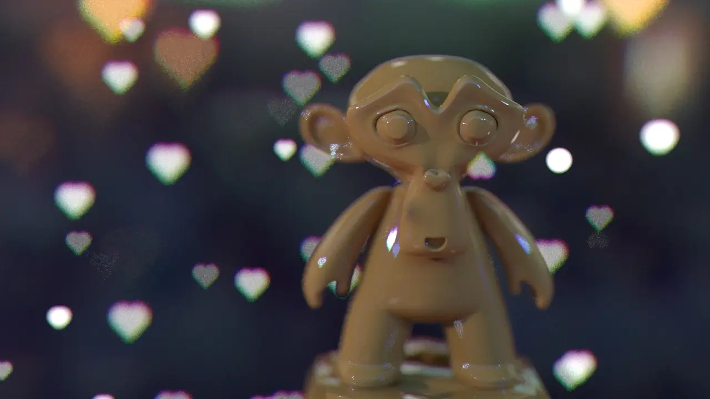

现实生活中由于相机长时间使用，会造成镜头老化，形成这种色偏效果，也叫紫边，色偏效果的强弱往往与光圈值的大小和光线的高反差有关（摄影中来讲）。这种效果在摄影中是令人很反感的，但是我们做3D创作时，常常在渲染出图后加一些滤镜效果以增加真实感和艺术性，用的最多的就是这种镜头色偏效果。
而在3D渲染中，我们通常使用的渲染器如C4D默认渲染器就有这种色偏效果，但是CR渲染器没有。
所以，我用xpresso编写了一个预设，可以直接在C4D里进行调节，光圈形状也是程序纹理，不用来回换图。安装预设后可以在内容浏览器找到。打开后，界面是这样子。对象列表有两组文件。
点击色偏散景调整，有对应的属性面板，我们主要调整这里的参数基本就可以实现想要的效果了。
如何使用：
1、这个文件默认就设定了光圈虚化效果和色偏效果，只需要双击预设就可以直接载入到你现有的场景中。然后一定要记得进入摄像机视图，光圈才有效；
2.第一个参数是摄像机焦点对象，也就是把不需要虚化的对象进行指定（也就是主体部分）。或者直接用摄像机对象标签里的设置目标距离（文章开头有说）。
3.基本上操作完前两步就可以渲染了。如果想要更好的效果就继续往下看：
4.光圈：
- 关闭预览图：也就是画面中间的那个RGB图，如果不想渲染出来就可以直接勾选关闭了（编辑视窗也可以直接单击关闭）；
- 开启景深：默认是开启的，如果不想要景深，关闭就可以了（色偏也就没有了）；
- 光圈值：这个不用解释了吧，光圈越小，景深越明显；
- 默认形状：默认设置了8个形状供自己挑选，下拉选择；
- 叶片个数：设置叶片的多少，也就是色偏预览图中多边形的边数。最少是3叶，最大100（扇形的话0.1=1°）；
- 自定义形状：勾选后，可以载入自己画好的形状（只支持样条对象，且只能是单个样条，样条布尔除外。否则识别不出来），然后拖拽到“选择对象”框框里。
5.色偏：
- 关闭色偏：勾线后色偏消失；
- 色偏强度：设置色偏的强弱；
- 旋转角度：设置叶片的旋转；
- 形状扭曲：扭曲滤镜。
6.色偏颜色：
- 可以修改RGB值，用户自定义。
7.高级散景效果：
- 这是我直接将CR摄像机里的参数挪过来的，这个也是设置后期效果的，具体就不说了。
8.渲染结果：
- 下面两张分别是用了色偏和没用色偏渲染出的结果，可以看到没用色偏渲染出来的图特别素，用了色偏的效果还是比较饱满的。
自定义形状功能，下面是渲染图：
